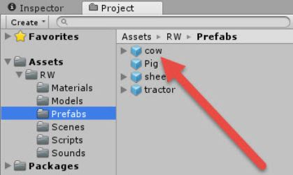

This tutorial will cover two important parts of audio in your video game, background music and sound effects.
Helpful Links:
Music and audio is a huge part of an immersive experience.
Music from video games in itself is designed to blend into the background of your brain, stimulating your senses without distracting.
It's the point of a video game soundtrack, to push you to succeed in winning the game. Yet video game music takes such a center stage in people's lives that it's become a part of our culture.
There are entire symphonies around the world that play video game music in concert halls.
Now let's get talking about your video game
What are some hallmarks of video game music?
Sound effects are a fundamental part of a video game. They bring the world to life from footsteps to grabbing collectables.
A lot of work goes into making sound effects for production, but they are instrumental in bringing your world to life.
There are a few options.
Let's add background music! This is pretty easy. All you have to do once you've found one is add an Audio Source to the scene.
Create → Audio → Audio Source.
An audio source emits the sound of your choice. Drag the clip into the Audio clip slot in the Inspector..
Once you've done that, you just have to check a few settings in the Inspector:
Great, you're all good. You can do this for multiple scenes with different songs, if you want!

Sound effects are added to prefabs just like your background music except you add them to your prefabs
Want your enemies to have footsteps as they're walking past? Your ancient artifact collectables to hum with forgotten power? This is where you add them.
I wanted to add a moo-ing sound to my cow prefabs. In the Project window, open the Assets → RW → Prefabs window and select the cow prefab.

The prefab needs an AudioSource to play sound.
In the Inspector, click Add Component and type in Audio Source.
Select, and next it's time to add in our clip

Currently your audio is empty. Just like how with the background music we dragged in our audio, let's do that again.

Don't forget to tweak your sound effects so they fit within your game!

Play your game
Does the background music play?
Think about your game.
Should different levels have different music added?
Should different aspects of your world have softer music? Scarier music? What about music for certain bosses? Or mini bosses?
How can you use music and sound to tell a story? Or further your story?